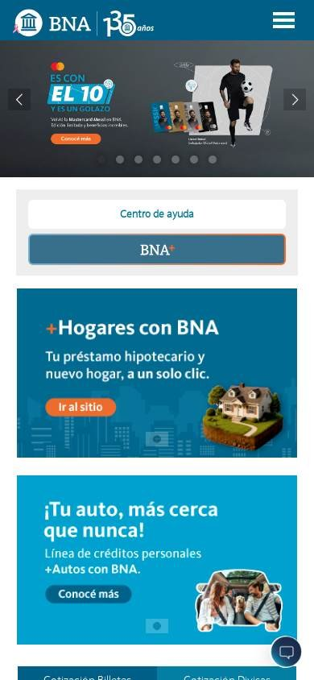
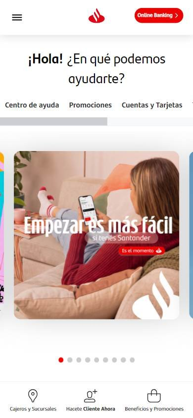

Banco o finanzas
Los seleccionados
Los tres sitios más visitados de Argentina, según estadísticas de tráfico.
En resumen: lo que hacen los líderes
La pantalla de inicio de cada uno


Estilo visual
Colores, imágenes, tipografía y cuánta información muestran.
Tu estilo visual debería…
- Paleta de dos colores: el de tu marca y uno de acento para el botón principal.
- Fotos de personas reales, cercanas, en lugar de imágenes de bancos genéricas.
Lo que tienen en común: Paletas acotadas de dos colores, fotos de personas reales y titulares grandes. El botón principal usa el color más fuerte de la marca.
La paleta de cada uno
Medida sobre la primera pantalla. Los colores de marca salen del header; el resto muestra cuánto espacio ocupa cada color.
Así lo resuelve cada uno
Ficha comparativa
| Aspecto | Banco Nación | Mercado Pago | Santander Argentina |
|---|---|---|---|
| Paleta | Acotada: azul petróleo + naranja para botones | Acotada: blanco + celeste y azul | Acotada: blanco + rojo de marca |
| Imágenes | Foto de campaña grande con persona | Foto de persona + gráfico ilustrado | Foto de campaña grande con persona |
| Tipografía | Sin serifa, títulos muy grandes | Sin serifa, titular enorme | Sin serifa, titular grande |
| Densidad | Media | Baja, mucho aire | Media |
| Botones | Naranja en píldora | Azul recto | Rojo en píldora |
Header
La franja de arriba con el logo y los accesos.
Tu header debería…
- Pestañas o menú por tipo de cliente: personas y empresas.
- A la derecha, dos botones: «Ingresar» (secundario) y «Hacete cliente» o «Abrí tu cuenta» (en el color de tu marca, relleno).
Lo que tienen en común: Los tres separan el contenido por tipo de cliente y ponen a la derecha dos botones: uno para entrar a la cuenta y otro, más llamativo, para hacerse cliente.
Así lo resuelve cada uno
Ficha comparativa
| Aspecto | Banco Nación | Mercado Pago | Santander Argentina |
|---|---|---|---|
| Fondo | Azul petróleo de marca | Blanco | Blanco |
| Logo | A la izquierda | A la izquierda | Centrado |
| Pestañas de cliente | Personas · Empresas · Institucional | Para vos · Para tu negocio | Menú hamburguesa |
| Botones a la derecha | «Centro de ayuda» y acceso a la cuenta | «Iniciar sesión» (claro) y «Abrí cuenta gratis» (azul) | «Hacete cliente» (borde rojo) y «Online Banking» (rojo) |
Primera pantalla
Lo primero que se ve debajo del header.
Tu primera pantalla debería…
- Foto de una persona real y un titular de beneficio de pocas palabras («Tu dinero rinde»).
- Un solo botón de acción en el color de la marca.
- Tono cercano, en segunda persona.
Lo que tienen en común: El banner vende un beneficio concreto con una persona real en la foto y un titular corto y grande. El tono es cercano: hablan de vos.
Así lo resuelve cada uno
Ficha comparativa
| Aspecto | Banco Nación | Mercado Pago | Santander Argentina |
|---|---|---|---|
| Formato | Carrusel con foto de campaña y botón naranja | Foto de persona + titular grande con beneficio | Saludo «¿En qué podemos ayudarte?» + carrusel de campaña |
| Mensaje | Beneficio de tarjeta | Rendimiento de tu dinero | Facilidad para empezar |
| Botón | Sí, «Conocé más» | No | Sí, rojo |